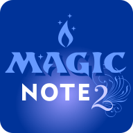
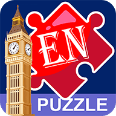
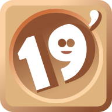
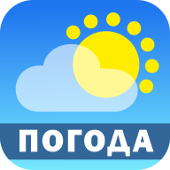
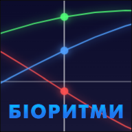

Записник нотатків. Має функції додати, видалити, зберегти архів. Додатково: кольорова гра для розвиненя інтуїції, помічник штучного інтелекту. Приємний інтерфейс з анімацією переходу на інші сторінки.
Завантажити
Вдосконалений Записник нотатків. Повністю перероблена версія зі спрощеним інтерфейсом. Має ті ж властивості як і попередній, але без зайвих речей. Має напівпрозорий інтерфейс.
ЗавантажитиЦе класична гра, де потрібно ловити манго під час падіння. Великі плоди приносять по 10 балів, а невпіймані не зменшують рахунок - головне, щоб не впали на голову, бо це може коштувати одного серця.
Завантажити
Ця програма для тих, хто не знайшов ефективного способу вивчення мов. З нею ви можете збирати речення й промовляти слова вголос, щоб почати розмовляти. Відкрийте в собі цей потенціал!
ЗавантажитиЦе вдосконалена версія вивчення мов. Крім англійської, французської, німецької додана польська. Побільшало найчастіше вживаних речень. З'явилася кнопка "Турбо" для кращого вивчення слів.
ЗавантажитиЗручний MP3-плеєр. Дозволяє насолоджуватися улюбленою музикою без зайвих налаштувань. Є вкладка плейлист. Можна слухати музику без пауз - плавний перехід від однієї пісні до іншої.
Завантажити
Дев’ятнашки - це розширена версія гри «п’ятнашки» з 19 плитками на полі 4x5 або 5×4. Мета - впорядкувати числа, пересуваючи плитки у порожню клітинку, зробивши якомога меньше ходів. Просто, але затягує!.
ЗавантажитиПростий конструктор сайтів зі збереженням у сторінку формата html. Легко додавати текст, фото, кнопки з вибором кольору або градієнту. Можна вставляти навіть готові скопійовані частини з сайтів.
ЗавантажитиПрограма для швидкого читання TXT та FB2. Відкрийте файл - і слова почнуть з’являтися на екрані в ритмі, який ви самі оберете. Регулюйте швидкість, розмір і кількість слів для комфортного читання.
Завантажити
Хочете знати прогноз погоди не тільки на сьогодні, а й на найближчий тиждень з ймовірністю опадів? Ця програма допоможе! Оновлення відбувається кожні 15 хвилин, потрібен лише Інтернет.
Завантажити
Програма, що показує стан людини: фізичний, емоційний та інтелектуальний. Вона будує графік за датою народження й допомагає зрозуміти, коли краще планувати активність, навчання чи відпочинок.
ЗавантажитиВсе для релаксу і заспокоєння. Можна взагалі нічого не робити, а просто слухати шум моря. Або дивитись як рухаються крабик, зірка і гойдається пальма. Чи малювати на піску і ганяти краба.
Завантажити